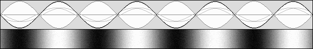
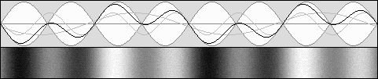
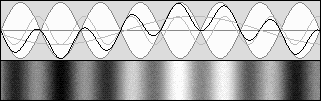
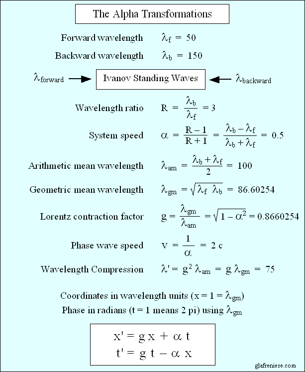
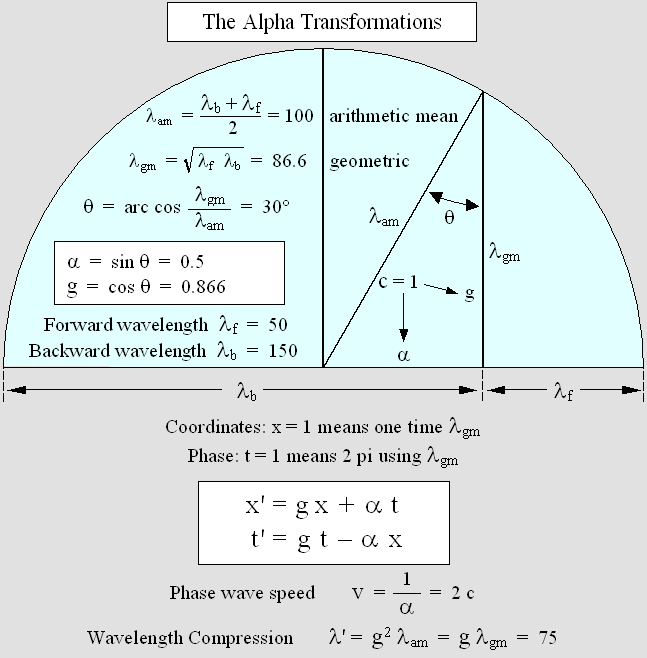
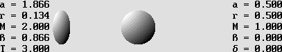
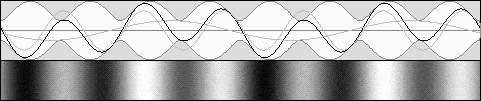
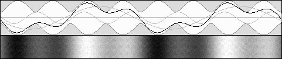

|
| 00 | 01 | 02 | 03 | 04 | 05 | 06 | 07 | 08 | 09 | 10 | 11| 12 | 13 | 14 | 15 | 16 | 17 | 18 | 19 | 20 | 21 | 22 | 23 | 24 | 25 | 26 | 27 | 28 | 29 | 30 | 31 | 32 | 33 | 34 |
IVANOV'S WAVES
|
|
If the wavelengths differ, standing waves still exhibit their characteristic node and antinode structure.
Mr. Ivanov discovered that this structure and its energy were moving according to the wavelength difference.
He found that the node and antinode pattern was undergoing a contraction.
It must also be pointed out that this system is experiencing the de Broglie phase wave.
All this is consistent with the Alpha Transformations, which apply to all waves including acoustic.
From 1981 to 1990, Mr. Yuri Nikolaevich Ivanov conducted meticulous experiences using sound waves in the presence of wind. What's more, he proposed some totally new and interesting hypotheses on matter mechanics based on this phenomenon, which he called "lively standing waves". However, because he deserves it, I suggest that it should be named after him. "Ivanov's waves" is indeed a more specific and appropriate name. Ivanov's waves were the missing link between Lorentz's Relativity and the still-to-establish matter mechanics. This phenomenon must be taken to be the basis of all laws of physics. Hence, it should systematically be considered when it comes to studying a moving system, especially in optics and acoustics. Fortunately, it is easily understandable and verifiable. This is no theory, this is just elementary facts. Here is the English version of Mr. Yuri Ivanov's website: 1 – Motion. The animated Gif below shows that, if the wavelength differ, the classic node and antinode envelope is moving.
Ivanov's waves motion. Wavelength ratio: R = lambda2 / lambda1 = 3 System speed: alpha = (R – 1) / (R + 1) = 0.5 c Acoustic contraction: 1 – alpha2 = 0.75 Relativistic contraction: Sqr(1 – alpha2) = 0.866
Mr. Ivanov pointed out that the wave intrinsic energy is moving at the system speed, which I called "Alpha". Obviously, each node being at a constant zero energy point, it behaves like a mirror. The reflected energy is moving to and fro between two successive nodes so that it finally follows the system. That is why it is misleading to consider that standing waves contain two sets of traveling waves. They may be generated and, most of the time, calculated this way. But, from a mechanical point of view, the resulting system is actually different. It is especially the case for spherical standing waves, where the full-wavelength central antinode definitely does not submit to this interpretation.
It is a well known fact that traveling waves do not interact. However, standing waves do. The antinode position may be slightly shifted sideways if the amplitude is no longer the same on both sides. It is the fundamentals of matter mechanics. In spite of this, I did use the theoretical wave addition method in order to produce Ivanov's waves below simply because it produces satisfactory results most of the time. Standing_Waves_02_Theoretical.mkv 2 – Contraction. Apparently, the Doppler contraction phenomenon was discovered by A. A. Michelson, who tried to detect it by means of his famous interferometer in 1887. Henri Poincare was referring to it as "the aberration" and he frequently spoke about "the aberration squared". Because of Einstein's Relativity, Lorentz's contraction factor was replaced later by the gamma factor, which is the reciprocal: gamma = 1 / g. In brief, there was no consensus on the choice of a symbol standing for Lorentz's contraction factor. The letter "g" appears relevant because of its relationship with the Greek symbol gamma. Its value is usually related to the normalized speed beta, which applies to the electron and to matter, but one may use the alpha speed as well: g = Sqr(1 – alpha2)
The three animated Gifs below indicate that, if the wavelength differ, the node and antinode envelope is experiencing a contraction. The regular acoustic Doppler shift produces a transverse contraction according to g. The contraction along the displacement axis x is given by g squared. The relativistic Doppler shift produces a less severe contraction according to g on the x axis and there is no transverse contraction. Please note that the animations below are displaying Ivanov's standing waves as seen by an observer moving at the alpha speed. This is why the node and antinode pattern seems to be stationary. However, it is actually moving at the alpha speed with respect to the medium. I had to make this difficult choice years ago because the size of such animated Gifs had to be very small. Unfortunately, this way, the phase wave is no longer displayed correctly.  No contraction. Same wavelength. The system is stationary.
 Acoustic contraction: g2 = 0.75 Wavelength ratio: R = 3; alpha = 0.5 c; g = 0.866.
 Acoustic contraction: g2 = 0.5 Wavelength ratio: R = 5.8257; alpha = 0.7071 c; g = 0.7071.
Mr. Ivanov also pointed out that, assuming that electronic waves are responsible for chemical bindings, this behavior obviously explains the Lorentz-FitzGerald contraction. As a matter of fact, Lorentz had shown that such a contraction perfectly explains Michelson's null result, but rigorously on condition that the frequency slows down according to his contraction factor. Most of the time, although it may be generated otherwise, the wavelength difference is caused by the Doppler effect. Unfortunately, Mr. Ivanov only experimented on sound waves, which are undergoing a severe contraction (and also a transverse one) because of the acoustic Doppler effect. The relativistic Doppler effect produces a less severe contraction because the basic frequency is slowing down according to Lorentz's factor. In this case, no transverse contraction occurs any more and this is why our absolute motion with respect to the aether becomes unverifiable. The video below shows that Ivanov's waves are undergoing a less severe contraction if the Doppler effect is relativistic. Standing_Waves_06_Doppler.mkv I am of an opinion that explaining matter contraction was Mr. Ivanov's most significant breakthrough. It definitely sheds some new light on Lorentz's Relativity. The phase wave (see below), which was discovered by Mr. de Broglie many years after Lorentz's 1904 paper, should also improve our comprehension of Lorentz's "local time". 3 – The phase wave. Below, the phase wave is well visible again in the form of regularly spaced black stripes moving toward the right.
The phase wave speed is given by: 1 / alpha. Its wavelength is given by: [contracted wavelength] / alpha The equivalent video clip below was generated thanks to the Delmotte-Marcotte virtual medium. Standing_Waves_01_Ivanov.mkv
Today's most accurate clocks are regulated using oscillation periods which are known to be amazingly constant. However, the phase wave is delaying the pulsation phase in the front of a moving system so that the period fluctuates along the displacement axis. The period is in advance at the rear and hence, the hour displayed by several moving clocks is progressively retarded forward according to their x coordinate. This is the true cause of Lorentz's "local time". So, apart from ticking slower, moving clocks exhibit a time shift. The most spectacular confirmation of this is that a clock synchronization procedure ends up with the equivalent time shift because of the relativistic Doppler effect. The regular acoustic Doppler effect is incompatible with such a result.
THE ALPHA TRANSFORMATIONS Ivanov's waves may be displayed on a computer screen using the Lorentz transformations. However, Lorentz's original set does not yield correct results because of multiple anomalies, including space and time incorrect interpretation. It appeared preferable to elaborate some specific transformations which apply solely to Ivanov's waves. I called them "Alpha Transformations" because they are marking the beginning of a great new science trek. Thanks to it, studying Relativity and Matter Mechanics will henceforth be much easier. The goal here is not to deal with space and time. Theoretically, Ivanov's waves are just the result of the addition of two wave trains propagating in opposite directions and whose wavelength differ. The only available variables are those two wavelengths. Thus, we are in the presence of a quite basic physical phenomenon which should definitely not require the use of non-Euclidean geometry... Firstly, the variables x and x' are to be given in wavelength units. They must be converted into pixels afterwards because the goal is to display Ivanov's waves on the computer screen. Secondly, the phase t must be given in wave period units, and then converted into radians. Although they are space and time units, they are definitely not to be given in meters and seconds. Surely, today's Relativity is a mess because the equivalent precalculus for the electron and for matter was not carefully explained by Lorentz, Larmor and Poincare. Fortunately, one must also get rid of Maxwell's equations because the Alpha Transformations also apply to acoustic waves, which are not "electromagnetic" in nature. The table below should be useful in order to deal with Ivanov's waves. The two wavelengths, forward and backward, are the only variables. It is shown that, in all cases, the x and t variables must be given according to the geometrical mean wavelength. As a matter of fact, in the case of the acoustic Doppler effect, the forward and backward wavelengths are shorter. Thus, x and t will refer to a shorter geometrical mean wavelength and the Alpha Transformations will finally reproduce the acoustic contraction.  The Alpha Transformations apply to Ivanov's waves. They may be considered as a preliminary version of the Lorentz Transformations.

Below is the computer program showing that the Alpha Transformations really work. The small video next to it was generated using this program. You may check or copy the source code if you want to reproduce Ivanov's waves by your own means. Standing_Waves_03_Transformations.bas Standing_Waves_03_Transformations.mkv It should be emphasized that the Alpha speed is also that of Fields of forces, which are responsible for all forces. Fields of force are indeed generated by electrons, protons and other particles because the in-between space is filled up with waves traveling in opposite directions. It is especially the case between two electrons, where an electrostatic field of force takes place. For example, let's consider a billiard ball hitting another one. Their speed being different, the relativistic Doppler effect produces two different wavelengths so that the field moves at the "alpha" speed. The field energy is also moving at the alpha speed so that some of the moving ball energy is progressively transferred into the unmoving ball. That is why the latter is finally accelerated while the other one is stopped.  As seen from the electrostatic field, however, all happens as if the two billiard balls were bouncing back at the same speed. In this case, there are two equal and opposite actions. This is how Relativity works: it is a matter of point of view. Hence, the action and reaction Principle should rather be called the "double action Principle".
You may observe in the video below that the true speed of the field of force in not exactly the arithmetic mean speed. It is rather the relativistic mean speed. Alpha_Field_of_Force.7c.mkv The speed of the moving emitter is 0.7071 times the speed of light. The other one is stationary. However, the observer is moving at the alpha speed so that both of them seem to be moving in opposite directions. Please note that the transverse wavelength remains the same for both systems. This is possible only if the pulse rate slows down according to Lorentz factor. May I insist on the fact that fields of force contain energy, and that matter contains mostly fields of force. Scientists should realize that energy is a major problem today and that searching how fields of force work is the most decisive step to solve it.
THE ALPHA SPEED AS A REFERENCE Because the Earth's absolute motion with respect to the aether is unverifiable, Lorentz's Relativity rather relies on a preferred frame of reference, which is postulated to be stationary. It is not, actually, but this assumption allows one to discover an even more surprising fact. The truth is that, in the presence of many frames of reference whose speed differ, any of them may be postulated to be stationary without creating any anomaly in the overall results. The goal here is to compare two systems moving in opposite directions at the same speed. Their contraction and their "time" (at least at the origin) being the same, there is no "space-time transformation" to be considered any more. It can be shown that those two moving frames of reference may easily be exchanged according to Poincare's Relativity Postulate using the intermediate "Alpha" preferred frame of reference. Because of its absolute Cartesian coordinates, it is the best way to reconcile the two other ones. If one uses the Alpha intermediate speed, the twin paradox and the train and tunnel paradox are especially easier to deal with. Thus, there are finally three frames of reference to be considered. This new approach is definitely preferable to Poincare's or Einstein's Relativity, which proves to be incorrect in this case. On the contrary, Lorentz's version of Relativity still holds true. It is possible to elaborate a mathematical demonstration of this, but the Time Scanner can easily perform this transformation in a much more dramatic way. The result is that the Doppler effect may be canceled or induced even though both results are produced using the same procedure.
This video shows the same phenomenon in a much better way: Time_Scanner_Doppler.mkv
Fortunately, the alpha speed is the ultimate answer to this apparently unsolvable problem. It doesn't work with acoustic waves, but it does reveal some fascinating results if the frequency of a moving system slows down according to Lorentz's "slower time" hypothesis. On the one hand, it is easy to consider that two systems are moving at the same speed in opposite directions. But on the other hand, it is no longer possible to consider that one of them is stationary while the other one is moving at twice its previous speed. This assumption is incompatible with Poincare's law of speed addition. It turns out that the alpha intermediate speed is not given exactly by the arithmetic mean speed. It is rather given using Poincare's law of speed addition below, the beta speed (which equals beta prime in this case) being the speed of the two systems moving in opposite direction. beta'' = (beta + beta') / (1 + beta * beta')
Or more simply: alpha = (1 – g) / beta
Below is a video which clearly shows that, in order to obtain exactly the same wavelength on both side of a reflecting screen (this is called the Hertz test), the only possible intermediate speed is the alpha speed. One emitter is stationary and the other one is moving away at a beta speed, producing a relativistic backward redshift. Standing_Waves_05_Alpha.mkv Because the observer is recording the same wavelength on both sides, which seems to undergo the relativistic redshift, he is entitled to presume that he himself is stationary and that the emitters are moving away from him at the same speed.
THE HERTZ TEST IN A MOVING ENVIRONMENT Using acoustic waves, Mr. Ivanov could elaborate an in-depth analysis of his "lively standing waves" in a moving environment. However, the alpha speed as a reference using Poincare's law of speed addition may appear rather exotic. There is one situation where the alpha speed remains perfectly relevant, though. In this case, two wave generators on both sides are truly stationary and a reflecting screen is moving along the in-between axis. The Hertz test is well known to produce standing waves, but in this case the screen is moving. Hence, although the original waves are not undergoing the Doppler effect, the reflection process produces two Doppler shifts in a cascade. The waves are severely contracted on one side while they are rather severely dilated on the other side. The Doppler effect on a moving screen is not frequently shown. So, it is worthwhile to carefully examine the results on both sides in the video below. Clearly, Ivanov's standing waves are still present. What's more, they are nevertheless moving at the alpha speed, which is that of the screen. Standing_Waves_04_Hertz.mkv It should be emphasized that this phenomenon works with both acoustic and Hertzian waves. The node and antinode structure is moving at the screen speed, but the contraction differs on both sides. The absolute motion of the screen with respect to air may easily be deduced by comparing the two resulting wavelengths. However, assuming that the reflecting screen is unmoving and that the two emitters are moving at the same speed and in the same direction, it is still impossible to detect their absolute speed through the aether because of the relativistic Doppler effect. PARTIALLY STANDING WAVES The animation below shows how standing waves behave when dilated or compressed waves are two times stronger. Such standing waves produce a very peculiar peapod-like envelope. This unusual form of Ivanov's waves is interesting because electrons contain such "partially moving standing waves" beyond a certain distance. As a matter of fact, when electrons move closer, electrostatic fields of force progressively transform to gluonic fields. The interesting point is that the in-between form is experiencing some surprising phase shifts. This is why electrons are no longer repelling one another when they come very close together. Because of the phase shift, a neutron may contain only electrons and still exhibit a neutral charge.
 Partially moving standing waves. Forward contracted waves are stronger. E1 = 67 %, E2 = 33 %, beta = .5
 Partially moving standing waves. Backward dilated waves are stronger. E1 = 33 %, E2 = 67 %, beta = .5
TRANSVERSE STANDING WAVES Before analyzing transverse plane standing waves, one must be familiar with transverse plane traveling waves. Opticians are aware that any large plane (and equiphase) emitting device produces plane waves which are experiencing the well known Fresnel-Fraunhofer diffraction pattern. However, most of them still ignore that this interference pattern is still present if the emitter is moving. In this case, the equiphase pulsation must be transformed using Lorentz's t' phase wave. In addition, the emitting device must be contracted in the direction of motion according to Lorentz's contraction factor g. The two small videos below are a clear indication that we are on the right track. Doppler_Lorentz_2D_transverse_Fresnel_diffraction.avi Parabola_Transverse_Doppler.mkv Let's consider two train cars at rest placed side by side on two parallel railways. Their flat sides are reflecting plane sound waves so that one can produce standing waves in the in-between space. However, if the train cars are moving, those waves must travel according to an angle in order to follow them through the wind. This is Lorentz's theta angle, which is given by: ArcSin(beta). Thus, because they are tilted, many successive wavefronts moving in opposite directions produce a scissor effect. In addition, the resonance frequency must slow down according to Lorentz factor g. Obviously, the wavefronts must travel a longer absolute distance in order to reach the other car. Their constant absolute speed being that of sound, the traveling time is finally slower. Such transverse "lively standing waves" behave in a very strange manner. In the animation on the left, I showed what happens if those trains are traveling rather slowly : 0.1 times the speed of the sound (about 76 mph). In this case, the scissor effect is obvious. On the right, the trains are moving at 0.5 times the speed of the sound. The Time Scanner shows that the intersection points follow the places where the Lorentz t' time does not change. Scanning these diagram at the phase wave speed (1 / alpha) would neutralize the scissor effect and produce regular standing waves.
The tilted wavefronts produce a scissor effect. This is why the system seems to move rightward at the phase wave speed.
Transverse "lively standing waves". The wavelength as measured on the y and z axes never changes. The apparent wavelength as measured on the x axis is that of the phase wave: lambda * g / alpha. This astounding phenomenon is more clearly shown in this video: Phase_Wave.mkv
My moving electron exhibits both the axial and transverse phase waves. Surprisingly, they produce two superimposed incoming and outgoing Doppler effects.
It should be emphasized that the alpha transformations do reproduce those transverse phenomena on condition that Lorentz's y and z equations below are added to the Alpha equation set: y ' = y z ' = z The transverse system is somewhat different from Ivanov's one because it does not exhibit a wavelength difference any more. The basic wavelength which is referred to may be that of the stationary system. However, because of the tilted wavefronts, the wavelength as measured along a moving transverse x or y axis is only apparent. Thus, the transverse wavelength apparently never changes even though it does, actually. The important point is that, from 1995 to 1904, Lorentz, Poincare and Larmor were working hard in order to find out why the Earth's absolute motion with respect to the aether could not be detected. All experiments had demonstrated that motion always appear relative. This is the basis of Relativity. Obviously, the very first condition in order to obtain such a result is that transverse distances should non change. Any contraction or expansion is indeed easily verifiable when two systems meet on the same plane. And because distances may be easily measurable using a given wavelenght, it is of the utmost importance that the Doppler effect does not change it. The transverse electron wavelenght, which is responsible for chemical bindings, should not change either. Fortunately, Lorentz's slower time (the pulsation rate, actually) does produce this constant transverse wavelength in spite of the Doppler effect. Ivanov's waves perfectly explain the Lorentz-Fitzgerald contraction. The important point is that Ivanov's waves contract. When he linked this phenomenon to the well-known Lorentz-FitzGerald contraction, Mr. Ivanov was surely aware that he had accomplished a giant leap in explaining Relativity. I would like to insist on the importance of Mr. Ivanov's discovery. Lorentz correctly explained Relativity in 1904, but his contraction hypothesis was rejected by scientists because he could not explain such a prodigy. Finally, Lorentz's Relativity was never thoroughly examined and Lorentz himself abandoned it. The question is: Why does matter contract? The quote below is the answer to this fundamental question.
Mr. Yuri Ivanov's outstanding explanation of the Lorentz-FitzGerald contraction.
As a matter of fact, the node displacement explains matter motion and contraction. In addition, Mr. Ivanov noticed that the wave intrinsic energy was also moving at the same speed. Today, it is a well-known fact that matter contains energy. This is indeed another clear indication that we are still on the right track. The Alpha transformations only apply to Ivanov's standing waves because they are compatible with acoustic waves, yet they are obviously similar to the Lorentz transformations. The only difference is the use and the signification of the x and t variables. Now, the Lorentz Transformations are clearly linked to a highly practical and verifiable phenomenon: Ivanov's standing waves. Thus, the Lorentz version of Relativity should now be reconsidered. Ivanov's waves applied to matter perfectly explain why the Earth's absolute motion with respect to the aether cannot be detected. At last! We do not have to deal with Einstein's esoteric ideas about space and time any more.
RYTHMODYNAMICS I would add that Mr. Ivanov already tried to solve the energy problem using what he calls "Rythmodynamics". This is brilliant. I developed my own interpretation of rythmodynamics, though, because traveling waves do not interact. Only standing waves do, and this is good news because fields of force and matter do consist of standing waves. Clearly, one must inevitably consider fields of force when it comes to analyzing forces and energy. Some characteristic frequencies are already capable of extracting some energy from matter. For example, visible light produces chemical reactions in plants. Infrared radiation or heat are involving lower frequencies or vibrations which cause hydrocarbons to burn in the presence of oxygen. Such phenomena are possible because of the external 8-electron atomic layer, which is responsible for chemical bindings. I already shown that the cubic structure of the atom perfectly explains chemical bindings. This strongly indicates that electrons do not rotate around the nucleus. If they are stationary, they may be captured in front of any of the 8 vertices if this position is unoccupied. In the image below, the electron from one atom was captured by another atom. The point is that this configuration is highly elastic. In spite of the strong forces which maintain the molecule cohesion, it is capable of high amplitude vibrations. Heating this molecule beyond a given threshold (or exposing it to a strong infrared radiation) will ultimately separate the two atoms. This process requires energy, though.
Chemical bindings are vulnerable to vibrations.
On the contrary, cold carbon and oxygen atoms do not normally produce carbon monoxide or dioxide. They must be heated so that the quivering movement randomly forces electrons from one atom to penetrate any of the capture areas of another atom. What's interesting here is that this process produces strong additional vibrations because the two atoms react as if they were tied up into one molecule by a powerful spring. The resulting heat may bind more atoms together in the vicinity so that a chain reaction is triggered. This is how fire is created. But this is only the tip of the iceberg. It is a well known fact that, inside protons and neutrons, gluonic fields are responsible for extremely powerful forces.
Electrostatic fields of force between distant electrons are made out of two sets of spherical traveling waves. The gluonic field structure is similar, but the ellipses remain stationary because they are made out of two sets of standing waves.
We should definitely examine how all those fields of force do react to different input frequencies. Any stable field of force actually reacts like a compressed spring. Strong vibrations on a constant frequency or on a series of constant harmonics may cause gluonic fields to transform to a lower or higher energy configuration, or to be created or destroyed, triggering a burst of energy. By chance, because of the resonance conditions, the process may even trigger a chain reaction. |
| 00 | 01 | 02 | 03 | 04 | 05 | 06 | 07 | 08 | 09 | 10 | 11| 12 | 13 | 14 | 15 | 16 | 17 | 18 | 19 | 20 | 21 | 22 | 23 | 24 | 25 | 26 | 27 | 28 | 29 | 30 | 31 | 32 | 33 | 34 |
|
|
Gabriel LaFreniere, Bois-des-Filion in Québec. Email: Please read this notice. On the Internet since September 2002. Last update March 4, 2011. |